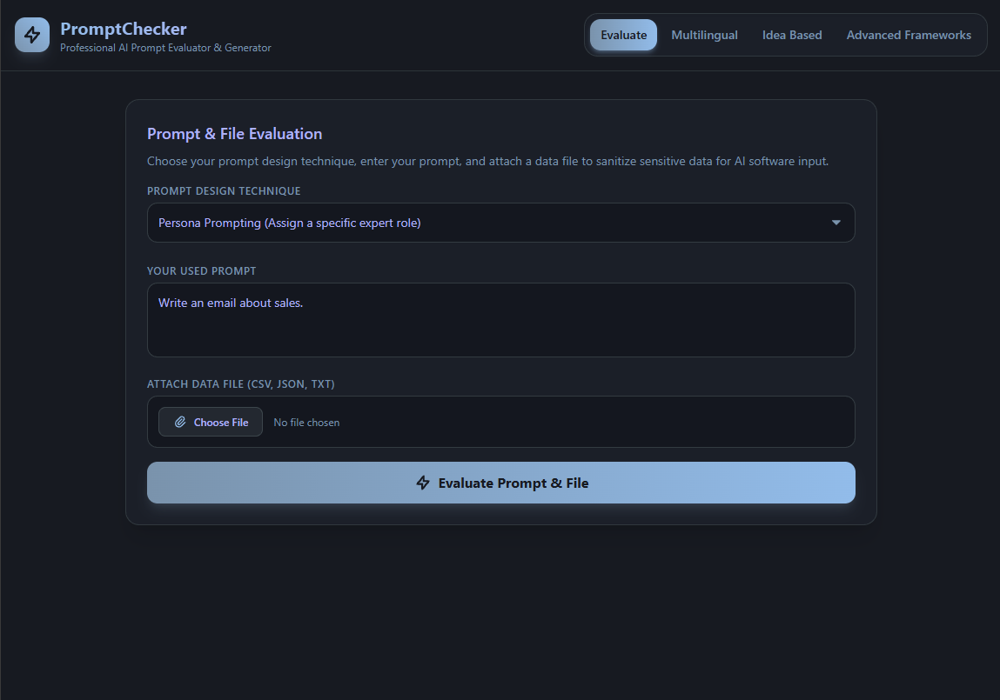
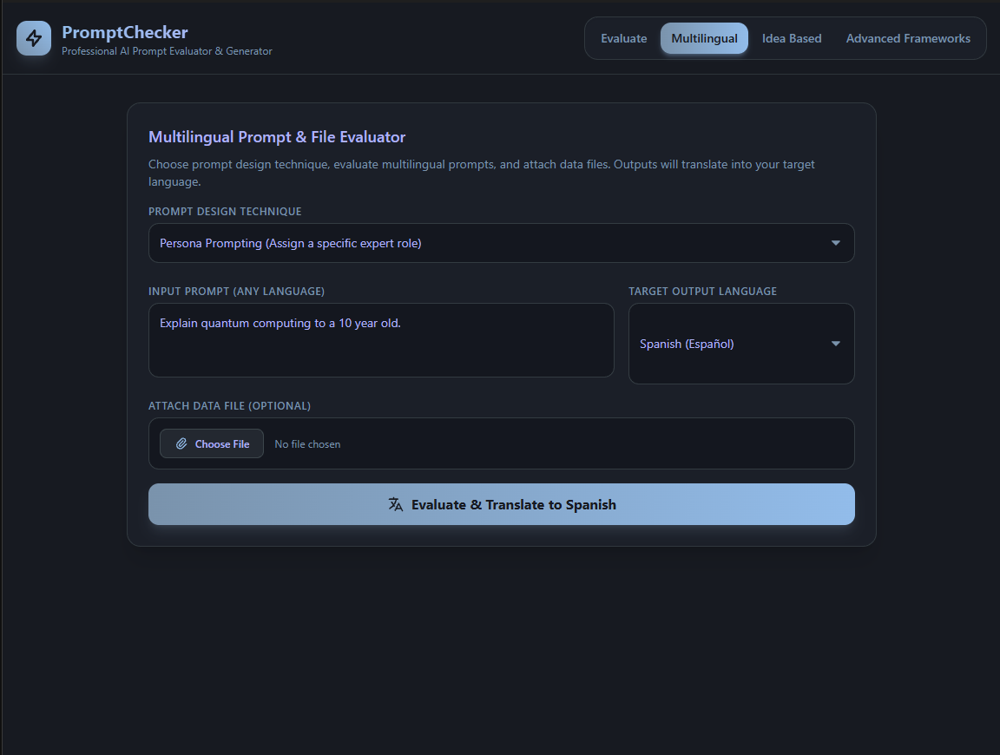
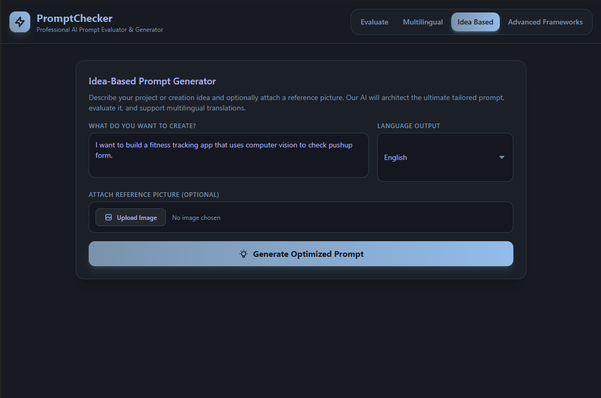
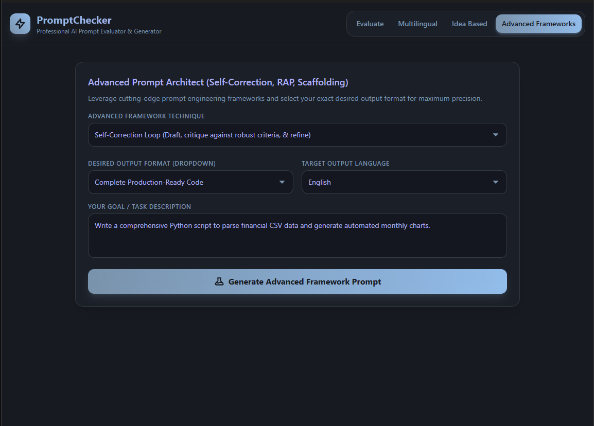

Show how effectively the prompt communicates the intended task.
AI PRODUCT · UI/UX · DEVELOPMENT
Prompt Checker.
An AI prompt evaluation and generation tool designed to help people understand the quality of their prompts, improve how they communicate with AI and choose a more suitable tool or prompting approach for their task.
01 / CHALLENGE
AI can be powerful. Asking well is the hard part.
PromptChecker helps users move from rough intention to a clearer, more structured instruction while making prompt-engineering concepts easier to understand.
Recommend a stronger prompting approach or next step.
Serve beginners while still exposing advanced frameworks when needed.
02 / PRODUCT ARCHITECTURE
Four workflows. One purpose.
MY ROLE
Product Thinking
UI/UX Design
AI Workflow Design
Development
How good is my prompt?
Assess an existing prompt and identify improvements.
Language shouldn't be the barrier.
Combine prompt evaluation with language selection and translation.
Start before the prompt exists.
Turn an initial objective into a more structured instruction.
More control when needed.
Expose frameworks, output formats and language controls for demanding tasks.
03 / PRODUCT EXPERIENCE
Different starting points. Same destination.
LIVE PRODUCT MODES




04 / INTERACTION THINKING
Powerful underneath. Clear on top.
05 / AI PRODUCT THINKING
AI isn't just the technology. It's part of the UX problem.
A score matters more when the user understands what needs improvement.
Pair evaluation with useful suggestions and stronger prompt structures.
Expose more control only when the user asks for it.
Design the product around how people understand and interact with AI.
06
OUTCOME & REFLECTION
Better AI experiences need better human guidance.
PromptChecker strengthened my understanding that an AI product needs more than model access — it also needs to help people understand what the system expects and what they can do next.
I would continue refining evaluation explanations, recommendation transparency, error handling and ways of showing why a suggested prompt is stronger.